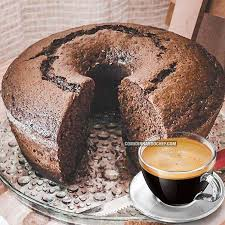
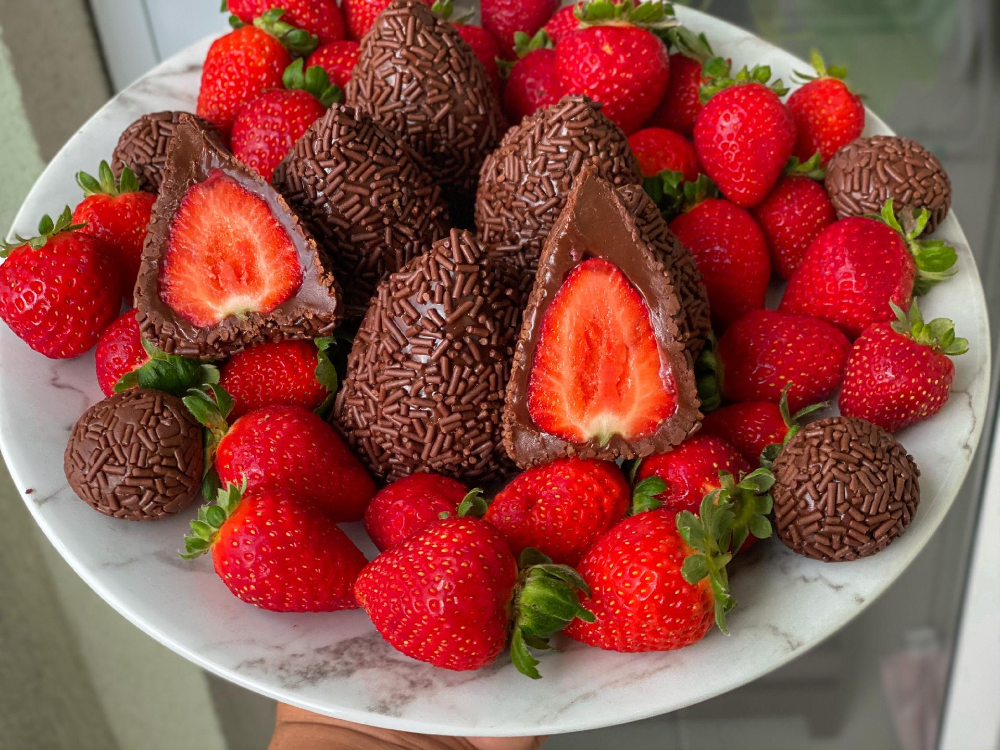

Arroz de Couve-Flor
- Arroz
- Couve-Flor
- Cebola Média
- Azeite
Deixe a couve-flor picada.
Adicione os ingredientes e
refogue bem. Adicone sal,
tampe a penala e deixe cozinhar.

Bata o acúcar, as gemas e o
café. Adicione farinha e
chocolate e mexa bem. Bata
as claras e junte mistura.
Bolo de Café
- Farinha de Trigo
- Açúcar
- Café Coado
- Chocolate em pó
- Ovos
Bata o acúcar, as gemas e o
café. Adicione farinha e
chocolate e mexa bem. Bata
as claras e junte mistura.

Junte o leite condensado,
chocolate em pó e manteiga
Aqueça no fogo baixo.
Envolva os morangos e passe
no granulado.
Coxinha de brigadiero
- Leite Condensado
- Chocolate em pó
- Manteiga
- Morango
- Chocolate Granulado
Junte o leite condensado,
chocolate em pó e manteiga
Aqueça no fogo baixo.
Envolva os morangos e passe
no granulado.